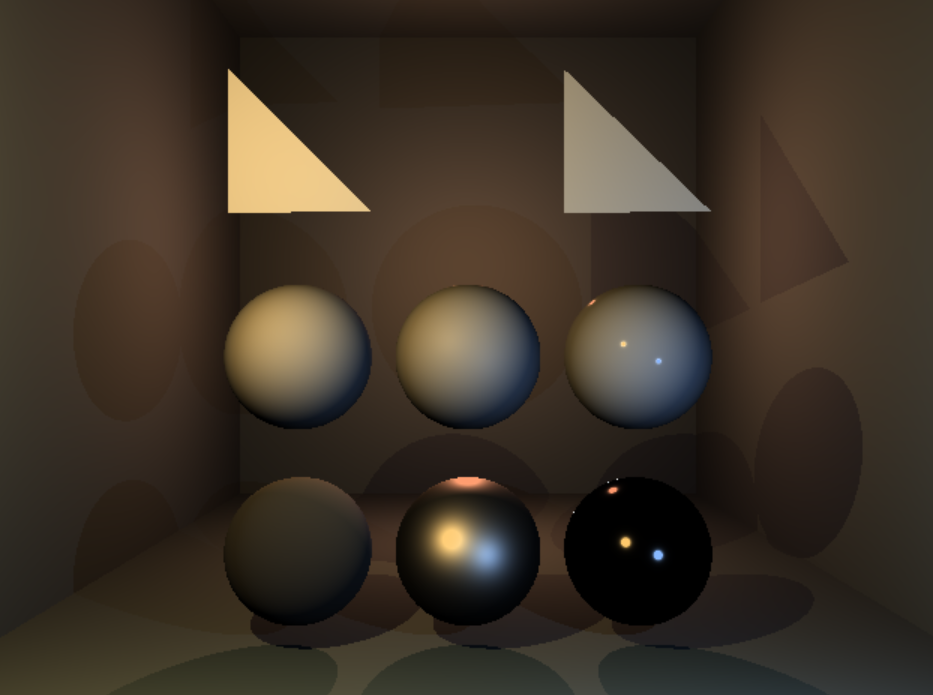

A software ray tracer built from scratch in C++ for the Graphics Programming 1 retake at DAE.
The renderer casts rays per pixel, computes intersections with scene geometry, and evaluates
direct lighting, shadows, and shading entirely on the CPU. The key technical challenge was making
it fast enough to render complex meshes, something I solved by implementing a Bounding Volume Hierarchy
to dramatically reduce the number of ray-primitive intersection tests.
Technical Highlights
BVH construction: Scene geometry is recursively subdivided into
axis-aligned bounding boxes (AABBs), building a binary tree. Each node splits along its
longest axis at the midpoint, with triangles partitioned by centroid position using an
in-place swap. Recursion terminates when a node contains two or fewer triangles.
BVH traversal: Ray-AABB intersection uses the slab method which is fast, branchless,
and numerically stable. Entire subtrees are skipped when the ray misses the parent AABB, with
early termination once the closest hit is confirmed.
Shading pipeline: Per-pixel evaluation of direct lighting (with shadow rays),
ambient contribution, and a Phong model: observed area, diffuse, and specular terms computed
separately and composited, togglable at runtime for debugging.
Möller-Trumbore triangle intersection: Initially implemented the naive
approach by finding the ray-plane intersection first, then testing whether the point is inside the
triangle using per-edge cross products. Replaced it with Möller-Trumbore, which skips the
plane intersection entirely and computes barycentric u/v coordinates
directly from the determinant, saving several operations per test. The original implementation
is still visible as commented-out code in the source.
Screenshots

Reference scene — spheres, planes, and direct lighting